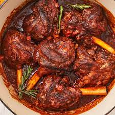

Braised Lamb Shanks

Chops, chops and chopped
If your idea of a sophisticated and impressive dish is braised lamb shanks then you are speaking in real terms. Mixed with green leafy vegetables, plates and fingers would be licked clean. Remember to add vegetables partway through braising to ensure they will have enough time to be infused with meaty flavour without overcooking.
Ingredients
- 2 Tablespoons Olive Oil
- 8 Lamb Shanks
- 1 Onion, roughly chopped
- 2 Carrots, roughly chopped
- Few Sprigs, fresh Rosemary
- 3 Fresh Bay Leaves
- 4 Garlic Cloves, left whole
- 2 Tablespoons plain flour
- 1 Tablespoon Tomato Puree
- 500ml lamb stock
- 1 Bunch Chamolia, or Giant Rape, or Spinach finely cut.
Steps
- Heat oven to 200 degrees Celsius. Pour oil in a casserole dish or roasting tray large enough to fit all the shanks. Spend a good 10 mins browning the lamb all over.
- Remove the lamb, add the onion and carrot and cook for 10 mins until starting to brown. Stir in the herbs and garlic and cook for a few mins more. Stir in the flour and tomato puree, season well then pour over the stock.
- Return the lamb shanks to the pan. Bring to a simmer, cover with a lid or tightly with foil and cook in the oven, undisturbed, for about 1 1/2- 2 hrs until lamb is tender. Remove the lamb from the sauce and set aside.
- Put pan back on the hob and bubble down the sauce for about 15 mins until rich and glossy.Pass through a sieve into a jar. Return the sieved sauce onto the hob and add the finely cut vegetables. Allow to simmer for about 2 mins, then add the lamb shanks. Stir a bit for 1 min and remove from the heat.
The test of pudding is in the eating!